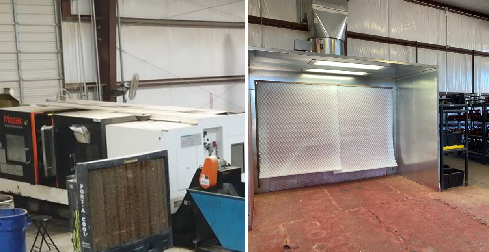
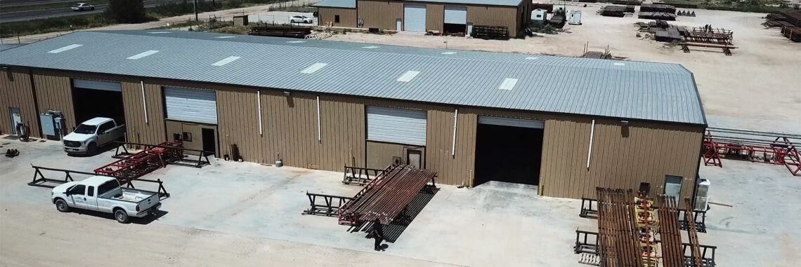

We have the resources to handle any job.
MAZAK SLT 550 CNC LATHE
Our SLT 550 Mazak lathes have the capacity to run bigger parts, at a high production speed. Redneck Pipe Rental’s series of Mazak SLT 550s are equipped with the latest technology Mazak has to offer, with the capability to chuck on parts up to a 32″ diameter and fit pipe/tubing up to a 10.8 ” O.D. We’ve gone the extra mile by utilizing an 80” long bed to accommodate longer parts during the manufacturing process, while also lowering production times.
MAZAK QUICK-TURN 450 CNC LATHE
Mazak Quick-Turn 450 lathes are equipped with 40” and 80” beds for manufacturing a variety of sizes, delivering high-quality parts at top production speed. Redneck Pipe Rental has the capabilities to manufacture long parts that require turning with intricate detail on the outside diameter, or complex smaller parts with inside diameter work. The Mazak Quick-Turn 450 holds tight tolerance and runs parts at rates competitors can’t match, and is able to swallow up to 7.5” diameter and chuck on a 22” diameter part.
HAAS VF7 CNC MILL
The Haas VF7 CNC mill is equipped with the latest features from Haas, with the capabilities of running larger parts requiring more intricate 4-axis rotary work. With CAD/CAM software, our machinists are able to push the limits of standard conventional CNC mills. The Haas Vf7 CNC mill is also equipped with industry leading tooling to maximize production and provide the most consistent quality and reliability across all parts.

Redneck Tubulars Facilities
PTECH Drilling Tubulars, LLC provides a wide range of expanded services to best meet the needs of our customers. Facilities are equipped with phosphate tanks that are set up with a rack system designed to handle long drill pipe, enabling our experts to phosphate your connections. The units are also set up with a basket capable of dipping a 59” long part up to 28” wide. Our facilities are strategically located across the country and provide ample storage space to handle all inventory requirements.